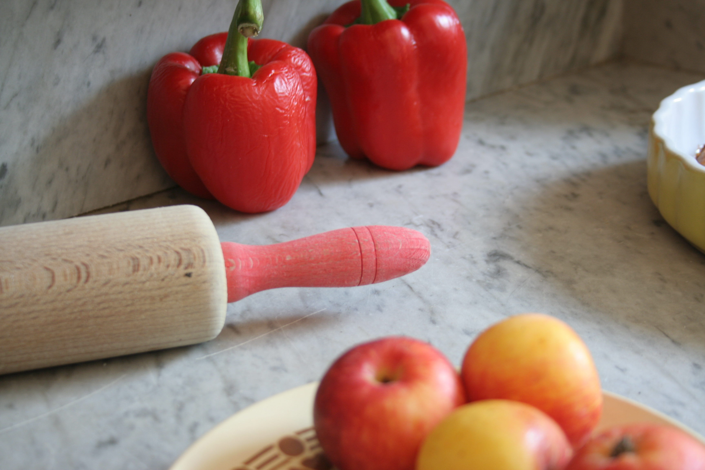
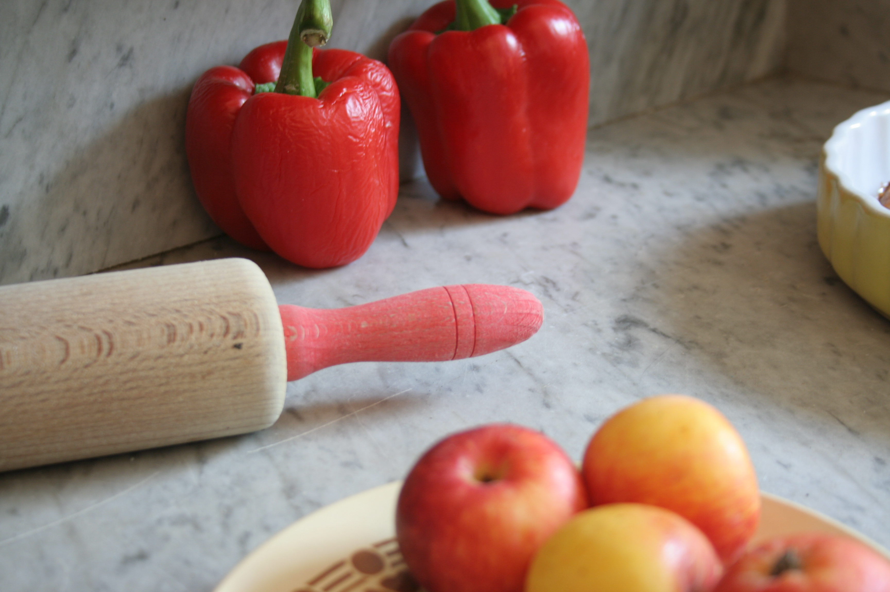

> Vous avez changé de décoration, vos anciens meubles vous plaisent et vous souhaitez les intégrer dans votre nouvel intérieur ? > Votre intérieur vous plait, vous souhaitez donner une deuxième vie à vos meubles en leur apportant une autre couleur, un autre aspect ? > Vous souhaitez acquérir un meuble de brocante et le relooker ? > Vous aimez les meubles personnalisés et uniques ? La patine est LA solution !
Léonnie,
> écoute vos envies, vous conseille et vous propose une solution adaptée à votre projet :
o expertise technique du meuble (essence du bois, décapage, restauration à prévoir…)
o diagnostic couleur à partir d’échantillons peints à la main
> réalise vos projets sur devis :
o créations sur-mesure, modèles uniques
o utilisation de peintures 100% naturelles fabriquées à l’atelier
o délais et engagements respectés
> travaille en collaboration avec :
o des brocanteurs pour dénicher le meuble dont vous rêvez
o des décorateurs pour intégrer un meuble patiné dans votre décoration intérieure
Pour plus d'informations : Contact